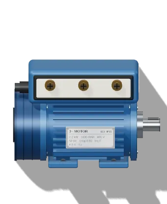

أساسيات الكهربا · الدرس 6 من 13
فيه كهربا مستمرة DC زي البطارية، وكهربا مترددة AC زي كهربا البيت. وكهربا البيت نفسها يا سنجل فاز يا تلاتة فاز. وفي الآخر هتحفظ ألوان الأسلاك عشان تعرف كل سلك من غير ما تخمّن.
البيت AC لأن الترانس بيرفعه ويوطّيه بسهولة عشان ينتقل لمسافات طويلة.

تلاتة فاز (المصانع)L1 L2 L3 + N + PEالعمارة 3 فاز، وكل شقة على فاز واحد. عشان كده جارك ممكن يبقى فيه كهربا وانت لأ.
ماتعتمدش على اللون لوحده. البيوت القديمة ألوانها ملخبطة: اتأكد بمفك الاختبار أو الأفوميتر.
8 أسلاك. محتاج 7 صح على الأقل.
ألوان الأسلاك على حسب IEC 60445. الكود المحلي والمباني القديمة ممكن يختلفوا، فاتأكد دايمًا بالقياس. تقدّمك بيتسجّل على الجهاز ده بس.
© 2026 LearnElectricals. كل الحقوق محفوظة. الموقع مش تابع لأي شركة من الشركات المذكورة (زي Siemens و Allen-Bradley و Delta و Schneider وغيرهم)، والأسماء والعلامات التجارية ملك أصحابها، ومستخدمة بس عشان نشرح الأجهزة.